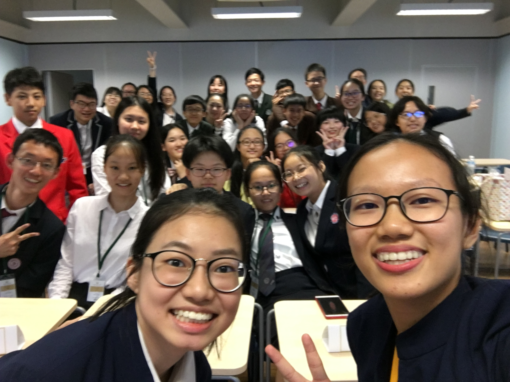
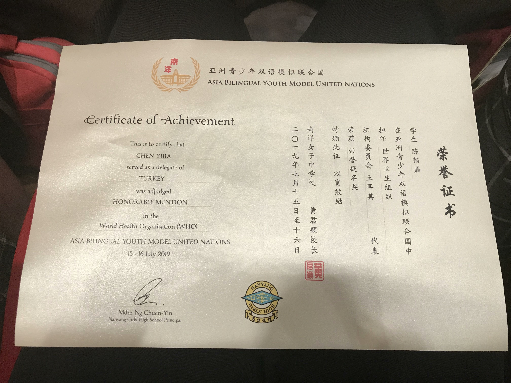

July 2019
Every participant, from local schools or schools overseas, mastered 2 languages, namely English and Mandarin, and used both of them in this two-day event. It was my first debate experience, and my first MUN experience.
It was challenging at first. Although each of us had one minute to set up our argument and we could prepare our speech in advance, most part of the debate required on-spot thinking and discussion. Teamworks seemed to be important because a two-third majority was needed for a draft resolution to be passed.
To be honest, the debate was interesting, but not as interesting as "group forming." In order to get votes and signatures from delegates of other nations, the draft resolution had to appeal to their wills and wants. However, it was usually hard to satisfy every nation's needs due to conflicting interests. The common tactic we used is the "Doctrine of the Mean" -- not fully satisfied, only partially.
There was one time when two big groups had formed, and each groups had approximately half of all the nations' supports. If this situation continued, no draft resolution would be passed. After a long unmoderated caucus, we spotted overlaps between the two draft resolutions. It would be wise to merge the two resolutions together and got the final one passed.
The interesting thing happend here: one of the sponsors from the other group was unwilling to share their draft resolution and merge with us - while all signatories agreed to share. The situation came to a deadlock.
In the end, we still merged our drafts and passed the final resolution. How? The reason was jaw-dropping: the sponsor objecting the merger left the conference early...
Anyways, aside from this puzzling guy, all other delegates were nice and polite, even when we were arguing intensely.
I am looking forward to my next MUN!
Me taking notes
Group photo with our Chair
Group photo with all participants
My certificate
--------The end--------